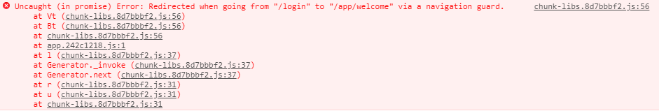

CONTENT OUTLINE
总结接触到的有关于
Vue-Router的知识点，基于最基本的使用之上的进阶内容。– 在新窗口打开页面
– 导航守卫
一、在新窗口打开页面
方法一：<router-link>标签实现新窗口打开
1 | <router-link target="_blank" :to="{path:'/home',query:{id:'1'}}"> |
方法二：编程式导航：
1 | print_schedule() { |
二、导航守卫
正如其名，vue-router 提供的导航守卫主要用来通过跳转或取消的方式守卫导航。有多种机会植入路由导航过程中：全局的, 单个路由独享的, 或者组件 级的。
记住参数或查询的改变并不会触发进入/离开的导航守卫。你可以通过观察 $route 对象来应对这些变化，或使用 beforeRouteUpdate 的组件内守卫。
1、全局前置守卫
你可以使用 router.beforeEach 注册一个全局前置守卫：
1 | const router = new VueRouter({ ... }) |
当一个导航触发时，全局前置守卫按照创建顺序调用。守卫是异步解析执行，此时导航在所有守卫 resolve 完之前一直处于 等待中。
每个守卫方法接收三个参数：
to: Route: 即将要进入的目标 路由对象from: Route: 当前导航正要离开的路由next: Function: 一定要调用该方法来 resolve 这个钩子。执行效果依赖next方法的调用参数。next(): 进行管道中的下一个钩子。如果全部钩子执行完了，则导航的状态就是 confirmed (确认的)。next(false): 中断当前的导航。如果浏览器的 URL 改变了 (可能是用户手动或者浏览器后退按钮)，那么 URL 地址会重置到from路由对应的地址。next('/')或者next({ path: '/' }): 跳转到一个不同的地址。当前的导航被中断，然后进行一个新的导航。你可以向next传递任意位置对象，且允许设置诸如replace: true、name: 'home'之类的选项以及任何用在router-link的toprop 或router.push中的选项。next(error): (2.4.0+) 如果传入next的参数是一个Error实例，则导航会被终止且该错误会被传递给router.onError()注册过的回调。
确保 next 函数在任何给定的导航守卫中都被严格调用一次。它可以出现多于一次，但是只能在所有的逻辑路径都不重叠的情况下，否则钩子永远都不会被解析或报错。这里有一个在用户未能验证身份时重定向到 /login 的示例：
1 | // BAD |
添加守卫之后的报错

原因：
vue-router路由版本更新产生的问题,导致路由跳转失败抛出该错误，但并不影响程序功能
解决方案一：
使用编程式导航跳转时，每次使用，后面都跟上.catch方法，捕获错误信息
1 | this.$router.push('/location').catch(err => ()) |
解决方案二：
全局解决：替换路由的 Push 和 replace 方法，放在 src/router/index.js 中：
1 | import Router from 'vue-router' |